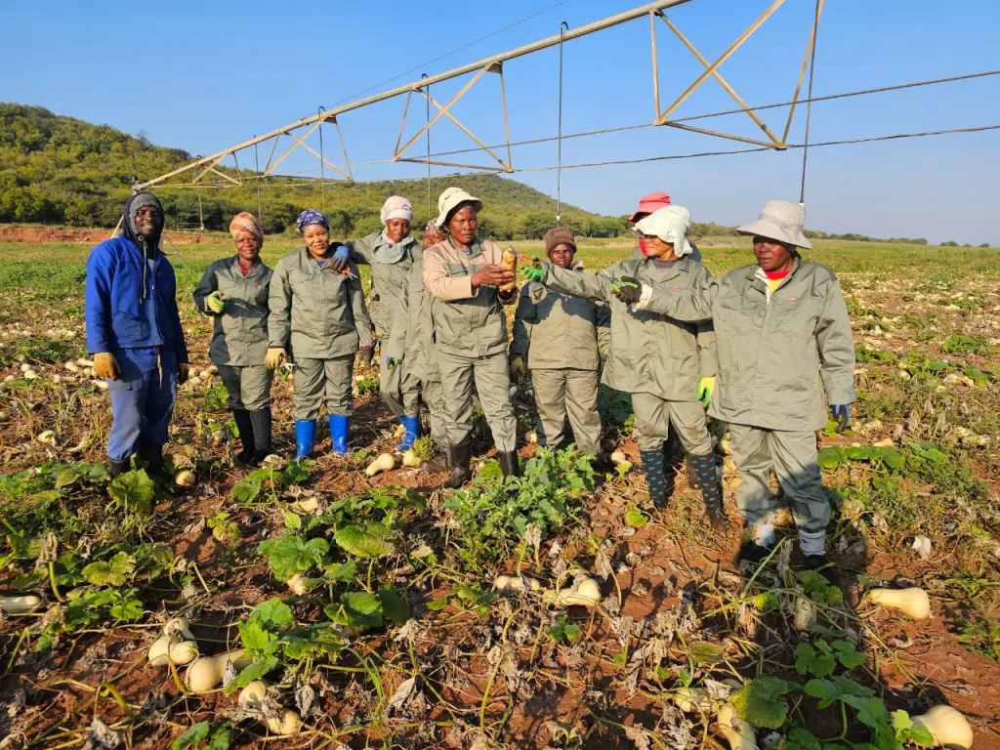

Communal Farming Support
Providing rural smallholders with seeds, equipment, and sustainable farming education.

Supporting smallholder farmers and rural households through sustainable farming practices, land planning, and community agricultural hubs in Pokwane, Sekhukhune, and Vhembe districts, the network establishes dedicated resource centers to streamline knowledge sharing and distribution. Through structured land-use strategies, climate-resilient crop rotation, and direct community engagement, local growers receive the technical guidance and collective infrastructure necessary to maximize land output while conserving vital natural resources.
Get InvovledPokwane harvest hope community network operates rural farming projects to eradicate household food insecurity, improve agricultural production drivers, and support sustainable land utilization. By connecting regional producers to direct market pathways, offering specialized equipment access, and implementing scalable climate-smart farming solutions, the organization directly strengthens rural livelihoods and ensures that every community member has access to nutritious, locally grown produce.
Providing rural smallholders with seeds, equipment, and sustainable farming education.
Hosting field workshops on soil management, water conservation, crop yield optimization, and market access.
Partnering with district frameworks to optimize rural land use for sustainable crop production.
access our foundetional case studies on rural production drivers and spatial planning frameworks: